Code
library(tidyverse)
library(googlesheets4)
library(emmeans)
library(lme4)
Análisis estadístico del abono de PORCINAZA Y DENSIDADES OBTIMAS DE SIEMBRA SOBRE EL RENDIMIENTO DE MAÍZ MORADO (Zea mays L.) var. INIA-601.
El presente trabajo tiene como finalidad analizar estadísticamente los datos experimentales provenientes del estudio “Niveles de porcinaza y densidades de siembra sobre el rendimiento de maíz morado (Zea mays L.) var. INIA-601 en Lámud”, con el propósito de contrastar los resultados originales de la tesis con los obtenidos mediante el procesamiento en R Studio. El maíz morado es un cultivo de relevancia económica y nutricional en el Perú. Sin embargo, su rendimiento depende de factores agronómicos como la densidad de siembra y el manejo de la fertilización orgánica. En este contexto, la porcinaza constituye una alternativa sostenible que puede mejorar la productividad y la salud del suelo.
A través de herramientas estadísticas y gráficas en R Studio, se busca reproducir el análisis de varianza (ANOVA), la comparación de medias y la visualización de los resultados, verificando la consistencia con los hallazgos reportados en la investigación original.
Analizar y comparar los resultados obtenidos en la tesis con los generados mediante el procesamiento estadístico en R Studio, evaluando los efectos de los niveles de porcinaza y las densidades de siembra sobre el rendimiento del maíz morado.
1.Organizar los datos experimentales en una base de datos estructurada en formato CSV o Google Sheets.
2.Importar y verificar correctamente los factores experimentales en R Studio (porcinaza, densidad y bloque).
3.Realizar el análisis de varianza (ANOVA) para cada variable evaluada.
4.Efectuar la comparación de medias mediante la prueba de Tukey.
5.Representar los resultados de manera gráfica para visualizar las diferencias entre tratamientos.
6.Contrastar los resultados obtenidos con los reportados en la tesis original.
Los datos experimentales fueron recolectados del anexo de la tesis y organizados en un archivo CSV denominado DBCA_maiz_morado.csv, que contiene los factores y variables evaluadas:
Factores: Nivel de porcinaza (0, 160, 320 y 480 g/planta) y Densidad de siembra (0.8×0.4 m y 0.8×0.5 m).
Bloques: 4 repeticiones.
Variables: Altura de planta, número de mazorcas por planta, longitud, diámetro y peso de mazorca, altura de inserción, número de mazorcas por hectárea y rendimiento de grano por hectárea.
library(tidyverse)
library(googlesheets4)
library(emmeans)
library(lme4)https://docs.google.com/spreadsheets/d/1o4mtAkI1lBgoUzqDT-e7cIhIwh_K5m6CoxAx0ETvwXU/edit?gid=1955940309#gid=1955940309
url <- "https://docs.google.com/spreadsheets/d/1o4mtAkI1lBgoUzqDT-e7cIhIwh_K5m6CoxAx0ETvwXU/edit?gid=1753270824#gid=1753270824"
gs <- url %>%
as_sheets_id()
fb <- gs %>%
range_read("fb") %>%
mutate(across(1:bloque, ~as.factor(.)))
str(fb)tibble [32 × 13] (S3: tbl_df/tbl/data.frame)
$ tratamientos : Factor w/ 8 levels "T1","T2","T3",..: 1 2 3 4 5 6 7 8 1 2 ...
$ densidad : Factor w/ 2 levels "0.8x0.4","0.8x0.5": 1 1 1 1 2 2 2 2 1 1 ...
$ porcinaza : Factor w/ 4 levels "0","160","320",..: 1 2 3 4 1 2 3 4 1 2 ...
$ bloque : Factor w/ 4 levels "I","II","III",..: 1 1 1 1 1 1 1 1 2 2 ...
$ altura30d :List of 32
..$ : POSIXct[1:1], format: "2025-01-23"
..$ : chr "20.0"
..$ : POSIXct[1:1], format: "2025-04-23"
..$ : POSIXct[1:1], format: "2025-02-26"
..$ : POSIXct[1:1], format: "2025-07-20"
..$ : POSIXct[1:1], format: "2025-05-24"
..$ : POSIXct[1:1], format: "2025-01-23"
..$ : chr "23.0"
..$ : POSIXct[1:1], format: "2025-05-23"
..$ : POSIXct[1:1], format: "2025-07-25"
..$ : POSIXct[1:1], format: "2025-08-23"
..$ : POSIXct[1:1], format: "2025-09-19"
..$ : POSIXct[1:1], format: "2025-03-23"
..$ : POSIXct[1:1], format: "2025-02-23"
..$ : POSIXct[1:1], format: "2025-03-21"
..$ : POSIXct[1:1], format: "2025-08-24"
..$ : POSIXct[1:1], format: "2025-06-21"
..$ : POSIXct[1:1], format: "2025-05-27"
..$ : POSIXct[1:1], format: "2025-05-23"
..$ : POSIXct[1:1], format: "2025-07-22"
..$ : chr "24.0"
..$ : POSIXct[1:1], format: "2025-05-21"
..$ : POSIXct[1:1], format: "2025-04-23"
..$ : POSIXct[1:1], format: "2025-04-23"
..$ : POSIXct[1:1], format: "2025-06-24"
..$ : POSIXct[1:1], format: "2025-02-20"
..$ : POSIXct[1:1], format: "2025-02-23"
..$ : POSIXct[1:1], format: "2025-07-24"
..$ : POSIXct[1:1], format: "2025-01-23"
..$ : POSIXct[1:1], format: "2025-02-23"
..$ : POSIXct[1:1], format: "2025-03-23"
..$ : POSIXct[1:1], format: "2025-09-21"
$ altura180d : chr [1:32] "192.9" "196.2" "199.4" "202.2" ...
$ mazorcas_p :List of 32
..$ : POSIXct[1:1], format: "2025-01-01"
..$ : POSIXct[1:1], format: "2025-01-01"
..$ : POSIXct[1:1], format: "2025-01-01"
..$ : POSIXct[1:1], format: "2025-04-01"
..$ : POSIXct[1:1], format: "2025-03-01"
..$ : POSIXct[1:1], format: "2025-04-01"
..$ : POSIXct[1:1], format: "2025-05-01"
..$ : POSIXct[1:1], format: "2025-08-01"
..$ : chr "1.0"
..$ : POSIXct[1:1], format: "2025-01-01"
..$ : POSIXct[1:1], format: "2025-03-01"
..$ : POSIXct[1:1], format: "2025-03-01"
..$ : POSIXct[1:1], format: "2025-04-01"
..$ : POSIXct[1:1], format: "2025-04-01"
..$ : POSIXct[1:1], format: "2025-06-01"
..$ : POSIXct[1:1], format: "2025-09-01"
..$ : POSIXct[1:1], format: "2025-01-01"
..$ : POSIXct[1:1], format: "2025-01-01"
..$ : POSIXct[1:1], format: "2025-03-01"
..$ : POSIXct[1:1], format: "2025-03-01"
..$ : POSIXct[1:1], format: "2025-03-01"
..$ : POSIXct[1:1], format: "2025-05-01"
..$ : POSIXct[1:1], format: "2025-05-01"
..$ : POSIXct[1:1], format: "2025-08-01"
..$ : chr "1.0"
..$ : chr "1.0"
..$ : POSIXct[1:1], format: "2025-03-01"
..$ : POSIXct[1:1], format: "2025-03-01"
..$ : POSIXct[1:1], format: "2025-03-01"
..$ : POSIXct[1:1], format: "2025-03-01"
..$ : POSIXct[1:1], format: "2025-05-01"
..$ : POSIXct[1:1], format: "2025-06-01"
$ longitud_m :List of 32
..$ : POSIXct[1:1], format: "2025-03-12"
..$ : chr "14.0"
..$ : POSIXct[1:1], format: "2025-04-14"
..$ : POSIXct[1:1], format: "2025-01-16"
..$ : chr "13.0"
..$ : POSIXct[1:1], format: "2025-03-16"
..$ : POSIXct[1:1], format: "2025-08-16"
..$ : POSIXct[1:1], format: "2025-04-21"
..$ : POSIXct[1:1], format: "2025-02-12"
..$ : POSIXct[1:1], format: "2025-09-13"
..$ : POSIXct[1:1], format: "2025-05-14"
..$ : chr "16.0"
..$ : POSIXct[1:1], format: "2025-09-12"
..$ : POSIXct[1:1], format: "2025-05-16"
..$ : POSIXct[1:1], format: "2025-07-16"
..$ : POSIXct[1:1], format: "2025-06-21"
..$ : POSIXct[1:1], format: "2025-04-12"
..$ : POSIXct[1:1], format: "2025-02-14"
..$ : POSIXct[1:1], format: "2025-03-14"
..$ : POSIXct[1:1], format: "2025-02-16"
..$ : POSIXct[1:1], format: "2025-02-13"
..$ : POSIXct[1:1], format: "2025-02-16"
..$ : chr "17.0"
..$ : chr "21.3 2"
..$ : POSIXct[1:1], format: "2025-05-12"
..$ : POSIXct[1:1], format: "2025-05-14"
..$ : POSIXct[1:1], format: "2025-06-14"
..$ : POSIXct[1:1], format: "2025-03-16"
..$ : POSIXct[1:1], format: "2025-01-13"
..$ : POSIXct[1:1], format: "2025-06-14"
..$ : POSIXct[1:1], format: "2025-09-16"
..$ : POSIXct[1:1], format: "2025-05-21"
$ diametro_m :List of 32
..$ : POSIXct[1:1], format: "2025-05-04"
..$ : POSIXct[1:1], format: "2025-04-04"
..$ : POSIXct[1:1], format: "2025-08-04"
..$ : chr "5.0"
..$ : POSIXct[1:1], format: "2025-09-04"
..$ : POSIXct[1:1], format: "2025-02-05"
..$ : POSIXct[1:1], format: "2025-04-05"
..$ : chr "6.0"
..$ : POSIXct[1:1], format: "2025-04-04"
..$ : POSIXct[1:1], format: "2025-07-04"
..$ : POSIXct[1:1], format: "2025-07-04"
..$ : POSIXct[1:1], format: "2025-01-05"
..$ : POSIXct[1:1], format: "2025-08-04"
..$ : POSIXct[1:1], format: "2025-03-05"
..$ : POSIXct[1:1], format: "2025-03-05"
..$ : POSIXct[1:1], format: "2025-09-05"
..$ : POSIXct[1:1], format: "2025-06-04"
..$ : POSIXct[1:1], format: "2025-05-04"
..$ : POSIXct[1:1], format: "2025-09-04"
..$ : POSIXct[1:1], format: "2025-03-05"
..$ : chr "5.0"
..$ : POSIXct[1:1], format: "2025-01-05"
..$ : chr "5.0"
..$ : POSIXct[1:1], format: "2025-09-05"
..$ : POSIXct[1:1], format: "2025-06-04"
..$ : POSIXct[1:1], format: "2025-04-04"
..$ : POSIXct[1:1], format: "2025-07-04"
..$ : POSIXct[1:1], format: "2025-09-04"
..$ : chr "5.0"
..$ : POSIXct[1:1], format: "2025-07-04"
..$ : POSIXct[1:1], format: "2025-04-05"
..$ : POSIXct[1:1], format: "2025-01-06"
$ peso_g_m : chr [1:32] "89.6" "100.6" "109.4" "132.8" ...
$ AIM180 : chr [1:32] "82.0" "81.4" "79.7" "93.2" ...
$ mazorca_ha : num [1:32] 35156 35156 35156 42969 31250 ...
$ rendiminto_g_ha: num [1:32] 2801 3145 3418 4148 2819 ...\[ Porcinaza_{rendimineto} = \mu + bloque + porcinaza +densidad + porcinaza*densidad + e \]
md <- lmer(formula = rendiminto_g_ha ~ 0 + (1|bloque) + porcinaza*densidad
, data = fb)
anova(md)Analysis of Variance Table
npar Sum Sq Mean Sq F value
porcinaza 4 427614413 106903603 4730.191
densidad 1 1223048 1223048 54.117
porcinaza:densidad 3 1755063 585021 25.886library(car)Anova(md)Analysis of Deviance Table (Type II Wald chisquare tests)
Response: rendiminto_g_ha
Chisq Df Pr(>Chisq)
porcinaza 9269.859 4 < 2.2e-16 ***
densidad 54.117 1 1.889e-13 ***
porcinaza:densidad 77.657 3 < 2.2e-16 ***
---
Signif. codes: 0 '***' 0.001 '**' 0.01 '*' 0.05 '.' 0.1 ' ' 1# Si no lo tienes cargado:
library(emmeans)
# Medias ajustadas y comparaciones múltiples (Tukey)
em <- emmeans(md, pairwise ~ porcinaza * densidad, adjust = "tukey")
# Mostrar resultados
em$emmeans # Medias ajustadas por tratamiento porcinaza densidad emmean SE df lower.CL upper.CL
0 0.8x0.4 2888 75.6 24 2732 3044
160 0.8x0.4 3420 75.6 24 3264 3576
320 0.8x0.4 3477 75.6 24 3321 3633
480 0.8x0.4 4408 75.6 24 4252 4564
0 0.8x0.5 2654 75.6 24 2498 2810
160 0.8x0.5 3547 75.6 24 3391 3703
320 0.8x0.5 4417 75.6 24 4261 4573
480 0.8x0.5 5139 75.6 24 4983 5295
Degrees-of-freedom method: kenward-roger
Confidence level used: 0.95 em$contrasts # Comparaciones múltiples (Tukey) contrast estimate SE df t.ratio p.value
porcinaza0 0.8x0.4 - porcinaza160 0.8x0.4 -532.0 106 21 -5.005 0.0013
porcinaza0 0.8x0.4 - porcinaza320 0.8x0.4 -588.8 106 21 -5.538 0.0004
porcinaza0 0.8x0.4 - porcinaza480 0.8x0.4 -1520.2 106 21 -14.301 <.0001
porcinaza0 0.8x0.4 - porcinaza0 0.8x0.5 234.0 106 21 2.201 0.3896
porcinaza0 0.8x0.4 - porcinaza160 0.8x0.5 -659.0 106 21 -6.199 0.0001
porcinaza0 0.8x0.4 - porcinaza320 0.8x0.5 -1529.2 106 21 -14.386 <.0001
porcinaza0 0.8x0.4 - porcinaza480 0.8x0.5 -2250.8 106 21 -21.173 <.0001
porcinaza160 0.8x0.4 - porcinaza320 0.8x0.4 -56.8 106 21 -0.534 0.9993
porcinaza160 0.8x0.4 - porcinaza480 0.8x0.4 -988.2 106 21 -9.297 <.0001
porcinaza160 0.8x0.4 - porcinaza0 0.8x0.5 766.0 106 21 7.206 <.0001
porcinaza160 0.8x0.4 - porcinaza160 0.8x0.5 -127.0 106 21 -1.195 0.9247
porcinaza160 0.8x0.4 - porcinaza320 0.8x0.5 -997.2 106 21 -9.381 <.0001
porcinaza160 0.8x0.4 - porcinaza480 0.8x0.5 -1718.8 106 21 -16.169 <.0001
porcinaza320 0.8x0.4 - porcinaza480 0.8x0.4 -931.5 106 21 -8.763 <.0001
porcinaza320 0.8x0.4 - porcinaza0 0.8x0.5 822.8 106 21 7.740 <.0001
porcinaza320 0.8x0.4 - porcinaza160 0.8x0.5 -70.2 106 21 -0.661 0.9972
porcinaza320 0.8x0.4 - porcinaza320 0.8x0.5 -940.5 106 21 -8.847 <.0001
porcinaza320 0.8x0.4 - porcinaza480 0.8x0.5 -1662.0 106 21 -15.635 <.0001
porcinaza480 0.8x0.4 - porcinaza0 0.8x0.5 1754.2 106 21 16.502 <.0001
porcinaza480 0.8x0.4 - porcinaza160 0.8x0.5 861.2 106 21 8.102 <.0001
porcinaza480 0.8x0.4 - porcinaza320 0.8x0.5 -9.0 106 21 -0.085 1.0000
porcinaza480 0.8x0.4 - porcinaza480 0.8x0.5 -730.5 106 21 -6.872 <.0001
porcinaza0 0.8x0.5 - porcinaza160 0.8x0.5 -893.0 106 21 -8.401 <.0001
porcinaza0 0.8x0.5 - porcinaza320 0.8x0.5 -1763.2 106 21 -16.587 <.0001
porcinaza0 0.8x0.5 - porcinaza480 0.8x0.5 -2484.8 106 21 -23.374 <.0001
porcinaza160 0.8x0.5 - porcinaza320 0.8x0.5 -870.2 106 21 -8.187 <.0001
porcinaza160 0.8x0.5 - porcinaza480 0.8x0.5 -1591.8 106 21 -14.974 <.0001
porcinaza320 0.8x0.5 - porcinaza480 0.8x0.5 -721.5 106 21 -6.787 <.0001
Degrees-of-freedom method: kenward-roger
P value adjustment: tukey method for comparing a family of 8 estimates emmeans(md, pairwise ~ porcinaza, adjust = "tukey")$emmeans
porcinaza emmean SE df lower.CL upper.CL
0 2771 53.8 20.3 2659 2883
160 3484 53.8 20.3 3371 3596
320 3947 53.8 20.3 3835 4059
480 4774 53.8 20.3 4661 4886
Results are averaged over the levels of: densidad
Degrees-of-freedom method: kenward-roger
Confidence level used: 0.95
$contrasts
contrast estimate SE df t.ratio p.value
porcinaza0 - porcinaza160 -712 75.2 21 -9.479 <.0001
porcinaza0 - porcinaza320 -1176 75.2 21 -15.645 <.0001
porcinaza0 - porcinaza480 -2002 75.2 21 -26.641 <.0001
porcinaza160 - porcinaza320 -464 75.2 21 -6.166 <.0001
porcinaza160 - porcinaza480 -1290 75.2 21 -17.162 <.0001
porcinaza320 - porcinaza480 -826 75.2 21 -10.996 <.0001
Results are averaged over the levels of: densidad
Degrees-of-freedom method: kenward-roger
P value adjustment: tukey method for comparing a family of 4 estimates emmeans(md, pairwise ~ densidad, adjust = "tukey")$emmeans
densidad emmean SE df lower.CL upper.CL
0.8x0.4 3548 38.4 9.83 3462 3634
0.8x0.5 3939 38.4 9.83 3853 4025
Results are averaged over the levels of: porcinaza
Degrees-of-freedom method: kenward-roger
Confidence level used: 0.95
$contrasts
contrast estimate SE df t.ratio p.value
0.8x0.4 - 0.8x0.5 -391 53.2 21 -7.356 <.0001
Results are averaged over the levels of: porcinaza
Degrees-of-freedom method: kenward-roger library(ggplot2)
ggplot(fb, aes(x = porcinaza, y = rendiminto_g_ha, fill = porcinaza)) +
geom_boxplot(alpha = 0.8, outlier.color = "red") +
facet_wrap(~ densidad) +
labs(
title = "Interacción entre Porcinaza y Densidad en el rendimiento (g/ha)",
x = "Porcinaza",
y = "Rendimiento (g/ha)"
) +
theme_minimal(base_size = 13) +
theme(legend.position = "none")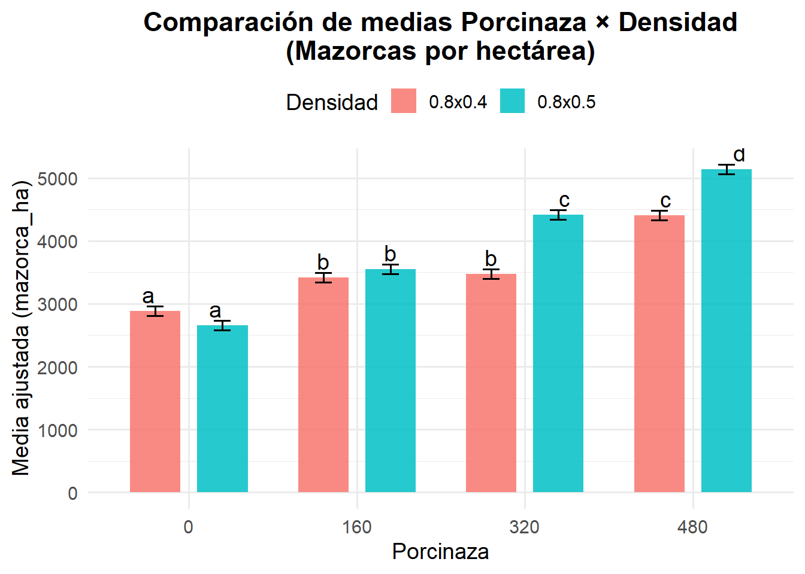
library(ggplot2)
# Convertir a data.frame
df_em <- as.data.frame(em$emmeans)
# Gráfico con barras y error estándar
ggplot(df_em, aes(x = porcinaza, y = emmean, fill = densidad)) +
geom_col(position = position_dodge(width = 0.8)) +
geom_errorbar(aes(ymin = emmean - SE, ymax = emmean + SE),
position = position_dodge(width = 0.8), width = 0.2) +
labs(
title = "Efecto de la porcinaza y densidad en el rendimiento (g/ha)",
x = "Porcinaza",
y = "Rendimiento ajustado (g/ha)"
) +
theme_minimal(base_size = 13)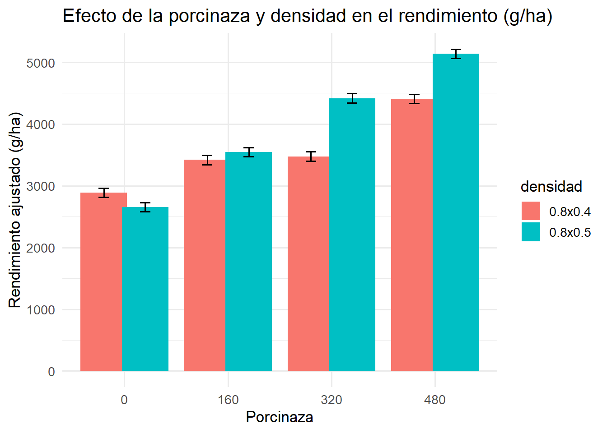
# QQ-plot para evaluar normalidad de residuos
qqnorm(resid(md))
qqline(resid(md), col = "red", lwd = 2)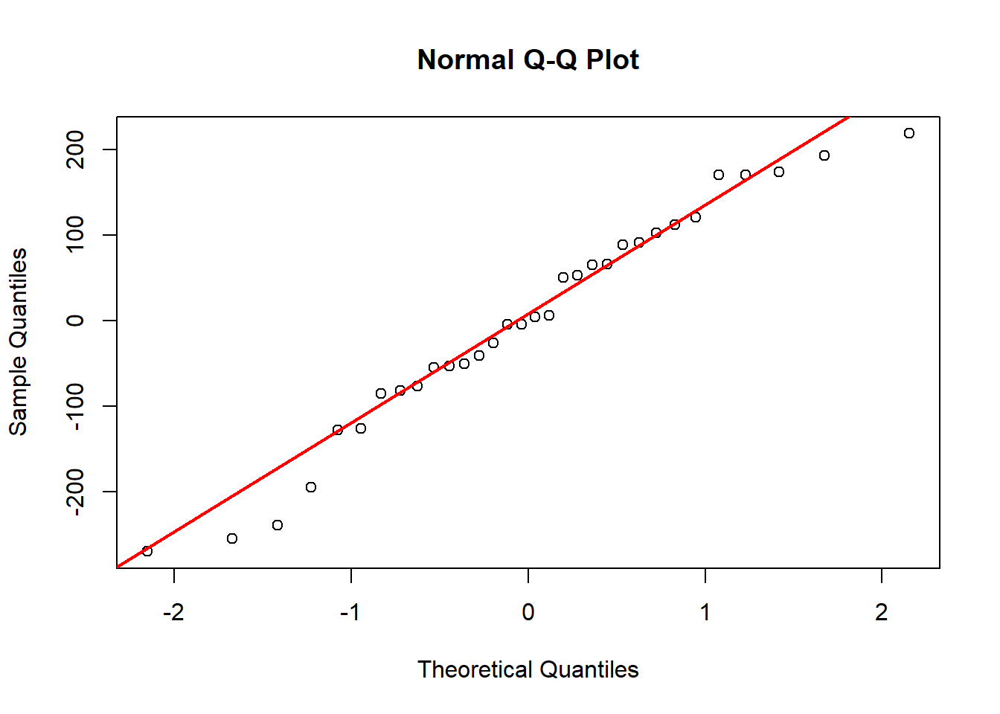
library(ggplot2)
# Extraer residuos del modelo
res <- resid(md)
# Crear gráfico con ggplot2
ggplot(data.frame(res), aes(sample = res)) +
stat_qq(color = "steelblue", size = 2) +
stat_qq_line(color = "red", linetype = "dashed") +
labs(
title = "Gráfico QQ-Plot de residuos",
x = "Cuantiles teóricos",
y = "Cuantiles de los residuos"
) +
theme_minimal(base_size = 13)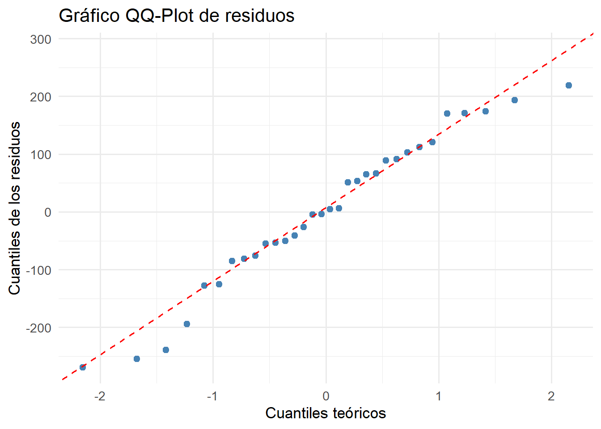
hist(resid(md),
breaks = 10,
col = "skyblue",
main = "Distribución de residuos",
xlab = "Residuos del modelo",
border = "white")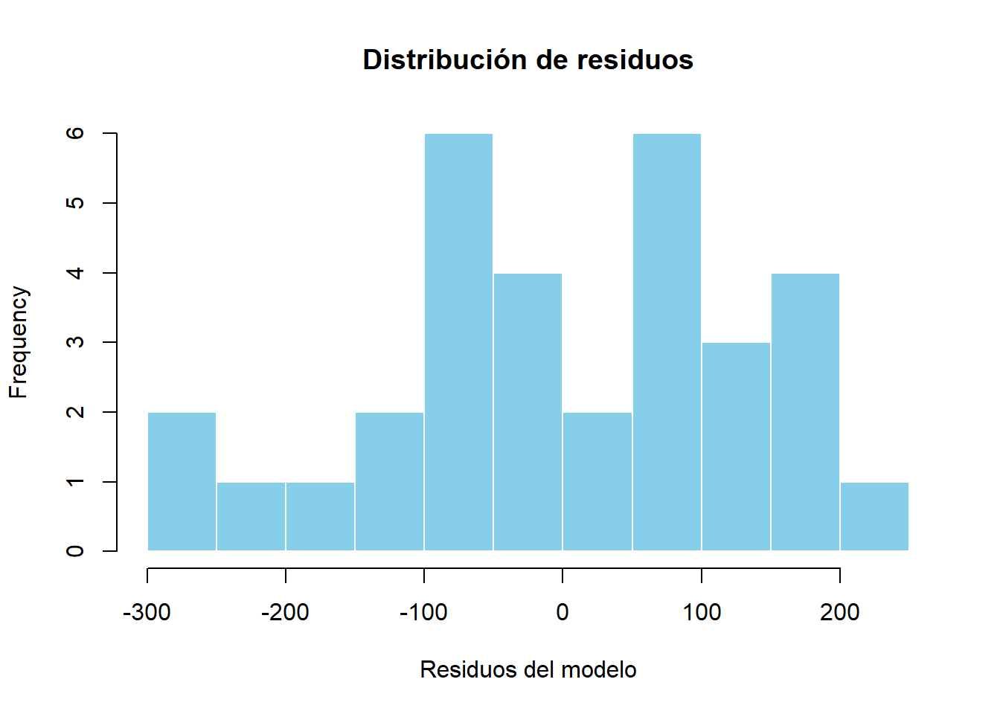
shapiro.test(resid(md))
Shapiro-Wilk normality test
data: resid(md)
W = 0.9664, p-value = 0.4064str(fb$altura30d)List of 32
$ : POSIXct[1:1], format: "2025-01-23"
$ : chr "20.0"
$ : POSIXct[1:1], format: "2025-04-23"
$ : POSIXct[1:1], format: "2025-02-26"
$ : POSIXct[1:1], format: "2025-07-20"
$ : POSIXct[1:1], format: "2025-05-24"
$ : POSIXct[1:1], format: "2025-01-23"
$ : chr "23.0"
$ : POSIXct[1:1], format: "2025-05-23"
$ : POSIXct[1:1], format: "2025-07-25"
$ : POSIXct[1:1], format: "2025-08-23"
$ : POSIXct[1:1], format: "2025-09-19"
$ : POSIXct[1:1], format: "2025-03-23"
$ : POSIXct[1:1], format: "2025-02-23"
$ : POSIXct[1:1], format: "2025-03-21"
$ : POSIXct[1:1], format: "2025-08-24"
$ : POSIXct[1:1], format: "2025-06-21"
$ : POSIXct[1:1], format: "2025-05-27"
$ : POSIXct[1:1], format: "2025-05-23"
$ : POSIXct[1:1], format: "2025-07-22"
$ : chr "24.0"
$ : POSIXct[1:1], format: "2025-05-21"
$ : POSIXct[1:1], format: "2025-04-23"
$ : POSIXct[1:1], format: "2025-04-23"
$ : POSIXct[1:1], format: "2025-06-24"
$ : POSIXct[1:1], format: "2025-02-20"
$ : POSIXct[1:1], format: "2025-02-23"
$ : POSIXct[1:1], format: "2025-07-24"
$ : POSIXct[1:1], format: "2025-01-23"
$ : POSIXct[1:1], format: "2025-02-23"
$ : POSIXct[1:1], format: "2025-03-23"
$ : POSIXct[1:1], format: "2025-09-21"# Si la variable es lista o texto, conviértela a numérica
fb <- fb %>%
mutate(altura30d = as.numeric(unlist(altura30d)))library(lme4)
library(lmerTest)
md_altura <- lmer(altura30d ~ 0 + (1 | bloque) + porcinaza * densidad, data = fb)
anova(md_altura)Type III Analysis of Variance Table with Satterthwaite's method
Sum Sq Mean Sq NumDF DenDF F value Pr(>F)
porcinaza 3.8014e+19 9.5034e+18 4 3.2000e+01 34.3125 3.537e-11 ***
densidad 9.9640e+16 9.9640e+16 1 4.4835e+20 0.3598 0.5486
porcinaza:densidad 1.0417e+18 3.4724e+17 3 Inf 1.2537 0.2884
---
Signif. codes: 0 '***' 0.001 '**' 0.01 '*' 0.05 '.' 0.1 ' ' 1fb <- fb %>% mutate(
bloque = as.factor(bloque),
porcinaza = as.factor(porcinaza),
densidad = as.factor(densidad)
)library(lme4)
library(lmerTest)
# Ajustar el modelo mixto (bloque aleatorio)
md_altura <- lmer(altura30d ~ 0 + (1 | bloque) + porcinaza * densidad,
data = fb)
# Resumen del modelo
summary(md_altura)Linear mixed model fit by REML. t-tests use Satterthwaite's method [
lmerModLmerTest]
Formula: altura30d ~ 0 + (1 | bloque) + porcinaza * densidad
Data: fb
REML criterion at convergence: 1043.8
Scaled residuals:
Min 1Q Median 3Q Max
-2.46393 -0.06596 0.02871 0.74878 0.95871
Random effects:
Groups Name Variance Std.Dev.
bloque (Intercept) 9.621e+15 98087781
Residual 2.770e+17 526276679
Number of obs: 32, groups: bloque, 4
Fixed effects:
Estimate Std. Error df t value Pr(>|t|)
porcinaza0 1.747e+09 2.677e+08 1.259e+02 6.526 1.50e-09
porcinaza160 1.310e+09 2.677e+08 1.259e+02 4.896 2.94e-06
porcinaza320 1.747e+09 2.677e+08 1.259e+02 6.528 1.48e-09
porcinaza480 1.751e+09 2.677e+08 1.259e+02 6.543 1.37e-09
densidad0.8x0.5 -4.384e+08 3.721e+08 4.646e+22 -1.178 0.2388
porcinaza160:densidad0.8x0.5 8.720e+08 5.263e+08 5.923e+20 1.657 0.0975
porcinaza320:densidad0.8x0.5 4.330e+08 5.263e+08 9.648e+21 0.823 0.4106
porcinaza480:densidad0.8x0.5 2.009e+06 5.263e+08 2.955e+22 0.004 0.9970
porcinaza0 ***
porcinaza160 ***
porcinaza320 ***
porcinaza480 ***
densidad0.8x0.5
porcinaza160:densidad0.8x0.5 .
porcinaza320:densidad0.8x0.5
porcinaza480:densidad0.8x0.5
---
Signif. codes: 0 '***' 0.001 '**' 0.01 '*' 0.05 '.' 0.1 ' ' 1
Correlation of Fixed Effects:
prcnz0 prc160 prc320 prc480 d0.80. p160:0 p320:0
porcinaz160 0.034
porcinaz320 0.034 0.034
porcinaz480 0.034 0.034 0.034
dnsdd0.80.5 -0.695 0.000 0.000 0.000
p160:0.80.5 0.492 -0.492 0.000 0.000 -0.707
p320:0.80.5 0.492 0.000 -0.492 0.000 -0.707 0.500
p480:0.80.5 0.492 0.000 0.000 -0.492 -0.707 0.500 0.500# ANÁLISIS DE VARIANZA
anova(md_altura)Type III Analysis of Variance Table with Satterthwaite's method
Sum Sq Mean Sq NumDF DenDF F value Pr(>F)
porcinaza 3.8014e+19 9.5034e+18 4 3.2000e+01 34.3125 3.537e-11 ***
densidad 9.9640e+16 9.9640e+16 1 4.4835e+20 0.3598 0.5486
porcinaza:densidad 1.0417e+18 3.4724e+17 3 Inf 1.2537 0.2884
---
Signif. codes: 0 '***' 0.001 '**' 0.01 '*' 0.05 '.' 0.1 ' ' 1library(emmeans)
# Medias ajustadas y prueba de Tukey
em_altura <- emmeans(md_altura, pairwise ~ porcinaza * densidad, adjust = "tukey")
# Ver las medias ajustadas
em_altura$emmeans porcinaza densidad emmean SE df lower.CL upper.CL
0 0.8x0.4 1.75e+09 2.68e+08 23.8 1.19e+09 2.30e+09
160 0.8x0.4 1.31e+09 2.68e+08 23.8 7.58e+08 1.86e+09
320 0.8x0.4 1.75e+09 2.68e+08 23.8 1.19e+09 2.30e+09
480 0.8x0.4 1.75e+09 2.68e+08 23.8 1.20e+09 2.30e+09
0 0.8x0.5 1.31e+09 2.68e+08 23.8 7.56e+08 1.86e+09
160 0.8x0.5 1.74e+09 2.68e+08 23.8 1.19e+09 2.30e+09
320 0.8x0.5 1.74e+09 2.68e+08 23.8 1.19e+09 2.29e+09
480 0.8x0.5 1.31e+09 2.68e+08 23.8 7.62e+08 1.87e+09
Degrees-of-freedom method: kenward-roger
Confidence level used: 0.95 # Ver comparaciones de Tukey
em_altura$contrasts contrast estimate SE df t.ratio
porcinaza0 0.8x0.4 - porcinaza160 0.8x0.4 4.36e+08 3.72e+08 21 1.172
porcinaza0 0.8x0.4 - porcinaza320 0.8x0.4 -6.91e+05 3.72e+08 21 -0.002
porcinaza0 0.8x0.4 - porcinaza480 0.8x0.4 -4.62e+06 3.72e+08 21 -0.012
porcinaza0 0.8x0.4 - porcinaza0 0.8x0.5 4.38e+08 3.72e+08 21 1.178
porcinaza0 0.8x0.4 - porcinaza160 0.8x0.5 2.59e+06 3.72e+08 21 0.007
porcinaza0 0.8x0.4 - porcinaza320 0.8x0.5 4.64e+06 3.72e+08 21 0.012
porcinaza0 0.8x0.4 - porcinaza480 0.8x0.5 4.32e+08 3.72e+08 21 1.160
porcinaza160 0.8x0.4 - porcinaza320 0.8x0.4 -4.37e+08 3.72e+08 21 -1.174
porcinaza160 0.8x0.4 - porcinaza480 0.8x0.4 -4.41e+08 3.72e+08 21 -1.185
porcinaza160 0.8x0.4 - porcinaza0 0.8x0.5 2.12e+06 3.72e+08 21 0.006
porcinaza160 0.8x0.4 - porcinaza160 0.8x0.5 -4.34e+08 3.72e+08 21 -1.165
porcinaza160 0.8x0.4 - porcinaza320 0.8x0.5 -4.32e+08 3.72e+08 21 -1.160
porcinaza160 0.8x0.4 - porcinaza480 0.8x0.5 -4.51e+06 3.72e+08 21 -0.012
porcinaza320 0.8x0.4 - porcinaza480 0.8x0.4 -3.93e+06 3.72e+08 21 -0.011
porcinaza320 0.8x0.4 - porcinaza0 0.8x0.5 4.39e+08 3.72e+08 21 1.180
porcinaza320 0.8x0.4 - porcinaza160 0.8x0.5 3.28e+06 3.72e+08 21 0.009
porcinaza320 0.8x0.4 - porcinaza320 0.8x0.5 5.34e+06 3.72e+08 21 0.014
porcinaza320 0.8x0.4 - porcinaza480 0.8x0.5 4.32e+08 3.72e+08 21 1.162
porcinaza480 0.8x0.4 - porcinaza0 0.8x0.5 4.43e+08 3.72e+08 21 1.190
porcinaza480 0.8x0.4 - porcinaza160 0.8x0.5 7.21e+06 3.72e+08 21 0.019
porcinaza480 0.8x0.4 - porcinaza320 0.8x0.5 9.27e+06 3.72e+08 21 0.025
porcinaza480 0.8x0.4 - porcinaza480 0.8x0.5 4.36e+08 3.72e+08 21 1.173
porcinaza0 0.8x0.5 - porcinaza160 0.8x0.5 -4.36e+08 3.72e+08 21 -1.171
porcinaza0 0.8x0.5 - porcinaza320 0.8x0.5 -4.34e+08 3.72e+08 21 -1.166
porcinaza0 0.8x0.5 - porcinaza480 0.8x0.5 -6.63e+06 3.72e+08 21 -0.018
porcinaza160 0.8x0.5 - porcinaza320 0.8x0.5 2.05e+06 3.72e+08 21 0.006
porcinaza160 0.8x0.5 - porcinaza480 0.8x0.5 4.29e+08 3.72e+08 21 1.153
porcinaza320 0.8x0.5 - porcinaza480 0.8x0.5 4.27e+08 3.72e+08 21 1.148
p.value
0.9312
1.0000
1.0000
0.9296
1.0000
1.0000
0.9346
0.9307
0.9276
1.0000
0.9332
0.9347
1.0000
1.0000
0.9290
1.0000
1.0000
0.9341
0.9259
1.0000
1.0000
0.9311
0.9316
0.9331
1.0000
1.0000
0.9365
0.9379
Degrees-of-freedom method: kenward-roger
P value adjustment: tukey method for comparing a family of 8 estimates library(emmeans)
library(ggplot2)
# Obtener medias ajustadas del modelo mixto
em_altura <- emmeans(md_altura, ~ porcinaza * densidad)
# Convertir a data frame
df_em_altura <- as.data.frame(em_altura)
# Gráfico de interacción (medias ajustadas + error estándar)
ggplot(df_em_altura, aes(x = porcinaza, y = emmean, fill = densidad)) +
geom_col(position = position_dodge(0.8), width = 0.6, alpha = 0.8) +
geom_errorbar(
aes(ymin = emmean - SE, ymax = emmean + SE),
width = 0.2,
position = position_dodge(0.8)
) +
labs(
title = "Interacción Porcinaza × Densidad en la altura de planta (30 días)",
x = "Porcinaza",
y = "Altura de planta ajustada (cm)",
fill = "Densidad"
) +
theme_minimal(base_size = 13)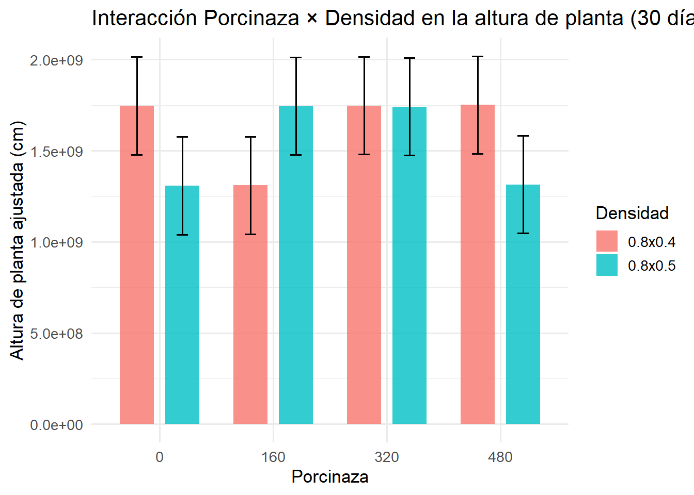
fb <- fb %>% mutate(
altura180d = as.numeric(unlist(altura180d)),
bloque = as.factor(bloque),
porcinaza = as.factor(porcinaza),
densidad = as.factor(densidad)
)
str(fb$altura180d) num [1:32] 193 196 199 202 189 ...library(lme4)
library(lmerTest)
md_altura180 <- lmer(altura180d ~ 0 + (1 | bloque) + porcinaza * densidad,
data = fb)
# ANOVA del modelo
anova(md_altura180)Type III Analysis of Variance Table with Satterthwaite's method
Sum Sq Mean Sq NumDF DenDF F value Pr(>F)
porcinaza 619397 154849 4 24 3505.6812 <2e-16 ***
densidad 4 4 1 24 0.0903 0.7663
porcinaza:densidad 15 5 3 24 0.1098 0.9536
---
Signif. codes: 0 '***' 0.001 '**' 0.01 '*' 0.05 '.' 0.1 ' ' 1library(emmeans)
em_altura180 <- emmeans(md_altura180, pairwise ~ porcinaza * densidad, adjust = "tukey")
# Medias ajustadas
em_altura180$emmeans porcinaza densidad emmean SE df lower.CL upper.CL
0 0.8x0.4 188 3.32 24 181 195
160 0.8x0.4 197 3.32 24 190 204
320 0.8x0.4 198 3.32 24 191 205
480 0.8x0.4 204 3.32 24 197 211
0 0.8x0.5 189 3.32 24 182 196
160 0.8x0.5 199 3.32 24 192 206
320 0.8x0.5 196 3.32 24 189 203
480 0.8x0.5 205 3.32 24 198 212
Degrees-of-freedom method: kenward-roger
Confidence level used: 0.95 # Comparaciones de Tukey
em_altura180$contrasts contrast estimate SE df t.ratio p.value
porcinaza0 0.8x0.4 - porcinaza160 0.8x0.4 -9.400 4.7 21 -2.000 0.5045
porcinaza0 0.8x0.4 - porcinaza320 0.8x0.4 -9.975 4.7 21 -2.123 0.4331
porcinaza0 0.8x0.4 - porcinaza480 0.8x0.4 -16.175 4.7 21 -3.442 0.0416
porcinaza0 0.8x0.4 - porcinaza0 0.8x0.5 -1.475 4.7 21 -0.314 1.0000
porcinaza0 0.8x0.4 - porcinaza160 0.8x0.5 -11.000 4.7 21 -2.341 0.3186
porcinaza0 0.8x0.4 - porcinaza320 0.8x0.5 -8.350 4.7 21 -1.777 0.6410
porcinaza0 0.8x0.4 - porcinaza480 0.8x0.5 -17.550 4.7 21 -3.734 0.0223
porcinaza160 0.8x0.4 - porcinaza320 0.8x0.4 -0.575 4.7 21 -0.122 1.0000
porcinaza160 0.8x0.4 - porcinaza480 0.8x0.4 -6.775 4.7 21 -1.442 0.8280
porcinaza160 0.8x0.4 - porcinaza0 0.8x0.5 7.925 4.7 21 1.686 0.6954
porcinaza160 0.8x0.4 - porcinaza160 0.8x0.5 -1.600 4.7 21 -0.340 1.0000
porcinaza160 0.8x0.4 - porcinaza320 0.8x0.5 1.050 4.7 21 0.223 1.0000
porcinaza160 0.8x0.4 - porcinaza480 0.8x0.5 -8.150 4.7 21 -1.734 0.6668
porcinaza320 0.8x0.4 - porcinaza480 0.8x0.4 -6.200 4.7 21 -1.319 0.8815
porcinaza320 0.8x0.4 - porcinaza0 0.8x0.5 8.500 4.7 21 1.809 0.6215
porcinaza320 0.8x0.4 - porcinaza160 0.8x0.5 -1.025 4.7 21 -0.218 1.0000
porcinaza320 0.8x0.4 - porcinaza320 0.8x0.5 1.625 4.7 21 0.346 1.0000
porcinaza320 0.8x0.4 - porcinaza480 0.8x0.5 -7.575 4.7 21 -1.612 0.7386
porcinaza480 0.8x0.4 - porcinaza0 0.8x0.5 14.700 4.7 21 3.128 0.0791
porcinaza480 0.8x0.4 - porcinaza160 0.8x0.5 5.175 4.7 21 1.101 0.9495
porcinaza480 0.8x0.4 - porcinaza320 0.8x0.5 7.825 4.7 21 1.665 0.7079
porcinaza480 0.8x0.4 - porcinaza480 0.8x0.5 -1.375 4.7 21 -0.293 1.0000
porcinaza0 0.8x0.5 - porcinaza160 0.8x0.5 -9.525 4.7 21 -2.027 0.4887
porcinaza0 0.8x0.5 - porcinaza320 0.8x0.5 -6.875 4.7 21 -1.463 0.8177
porcinaza0 0.8x0.5 - porcinaza480 0.8x0.5 -16.075 4.7 21 -3.421 0.0435
porcinaza160 0.8x0.5 - porcinaza320 0.8x0.5 2.650 4.7 21 0.564 0.9990
porcinaza160 0.8x0.5 - porcinaza480 0.8x0.5 -6.550 4.7 21 -1.394 0.8502
porcinaza320 0.8x0.5 - porcinaza480 0.8x0.5 -9.200 4.7 21 -1.958 0.5302
Degrees-of-freedom method: kenward-roger
P value adjustment: tukey method for comparing a family of 8 estimates df_em_altura180 <- as.data.frame(em_altura180$emmeans)
ggplot(df_em_altura180, aes(x = porcinaza, y = emmean, fill = densidad)) +
geom_col(position = position_dodge(0.8), width = 0.6, alpha = 0.8) +
geom_errorbar(
aes(ymin = emmean - SE, ymax = emmean + SE),
width = 0.2,
position = position_dodge(0.8)
) +
labs(
title = "Interacción Porcinaza × Densidad en la altura de planta (180 días)",
x = "Porcinaza",
y = "Altura de planta ajustada (cm)",
fill = "Densidad"
) +
theme_minimal(base_size = 13)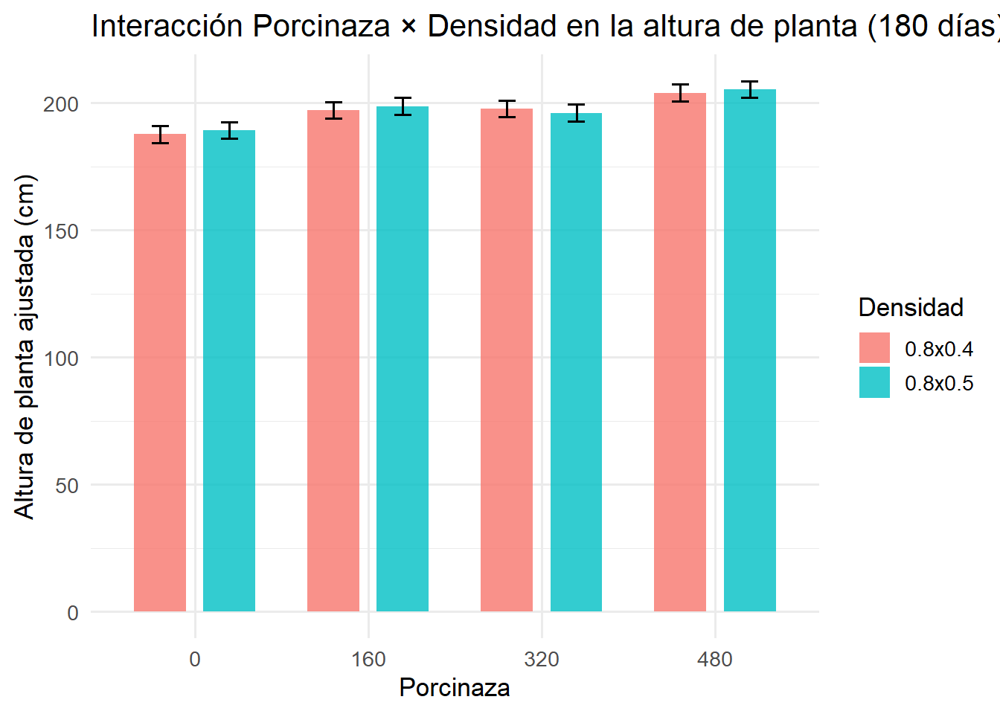
ggplot(fb, aes(x = porcinaza, y = altura180d, fill = densidad)) +
geom_boxplot(alpha = 0.8, position = position_dodge(0.8)) +
labs(
title = "Altura de planta a 180 días según Porcinaza y Densidad",
x = "Porcinaza",
y = "Altura de planta (cm)"
) +
theme_minimal(base_size = 13)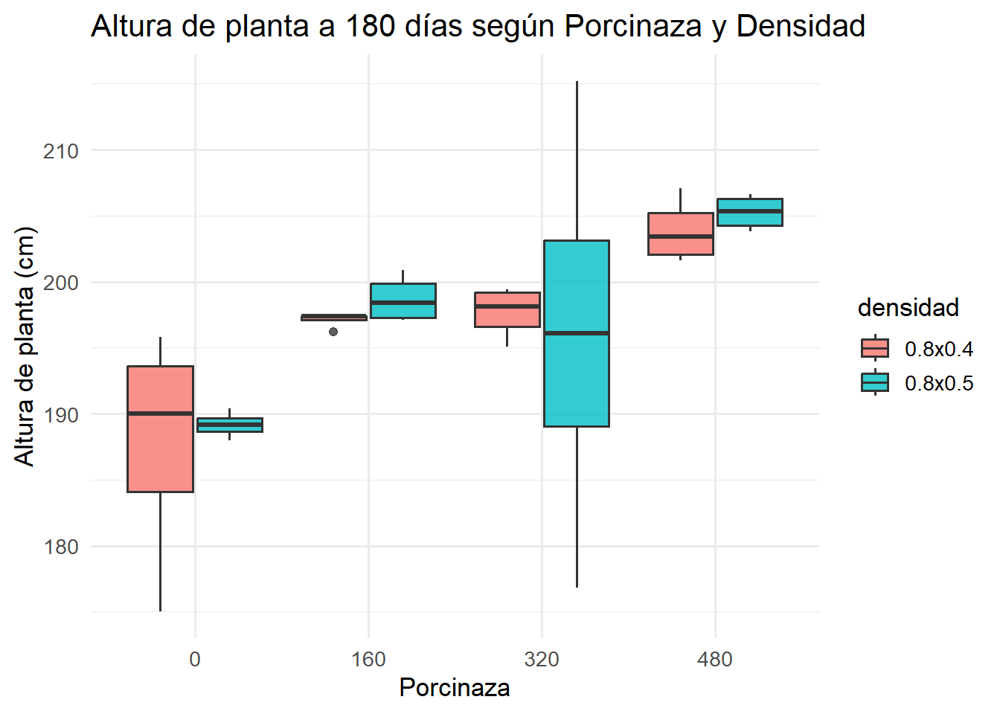
fb <- fb %>%
mutate(
mazorca_ha = as.numeric(unlist(mazorca_ha)),
bloque = as.factor(bloque),
porcinaza = as.factor(porcinaza),
densidad = as.factor(densidad)
)
str(fb$mazorca_ha) num [1:32] 35156 35156 35156 42969 31250 ...library(lme4)
library(lmerTest)
md_mazorca <- lmer(mazorca_ha ~ 0 + (1 | bloque) + porcinaza * densidad,
data = fb)
# Análisis de varianza
anova(md_mazorca)Type III Analysis of Variance Table with Satterthwaite's method
Sum Sq Mean Sq NumDF DenDF F value Pr(>F)
porcinaza 2.1572e+10 5392976622 4 24 1420.8483 <2e-16 ***
densidad 6.8839e+06 6883905 1 24 1.8137 0.1907
porcinaza:densidad 2.5382e+07 8460614 3 24 2.2291 0.1108
---
Signif. codes: 0 '***' 0.001 '**' 0.01 '*' 0.05 '.' 0.1 ' ' 1library(emmeans)
em_mazorca <- emmeans(md_mazorca, pairwise ~ porcinaza * densidad, adjust = "tukey")
# Medias ajustadas
em_mazorca$emmeans porcinaza densidad emmean SE df lower.CL upper.CL
0 0.8x0.4 33203 974 24 31193 35213
160 0.8x0.4 34180 974 24 32169 36190
320 0.8x0.4 38086 974 24 36076 40097
480 0.8x0.4 40040 974 24 38029 42050
0 0.8x0.5 32031 974 24 30021 34042
160 0.8x0.5 35156 974 24 33146 37167
320 0.8x0.5 38281 974 24 36271 40292
480 0.8x0.5 43750 974 24 41740 45760
Degrees-of-freedom method: kenward-roger
Confidence level used: 0.95 # Comparaciones de Tukey
em_mazorca$contrasts contrast estimate SE df t.ratio p.value
porcinaza0 0.8x0.4 - porcinaza160 0.8x0.4 -976 1380 21 -0.709 0.9958
porcinaza0 0.8x0.4 - porcinaza320 0.8x0.4 -4883 1380 21 -3.545 0.0335
porcinaza0 0.8x0.4 - porcinaza480 0.8x0.4 -6836 1380 21 -4.963 0.0014
porcinaza0 0.8x0.4 - porcinaza0 0.8x0.5 1172 1380 21 0.851 0.9875
porcinaza0 0.8x0.4 - porcinaza160 0.8x0.5 -1953 1380 21 -1.418 0.8392
porcinaza0 0.8x0.4 - porcinaza320 0.8x0.5 -5078 1380 21 -3.686 0.0247
porcinaza0 0.8x0.4 - porcinaza480 0.8x0.5 -10547 1380 21 -7.656 <.0001
porcinaza160 0.8x0.4 - porcinaza320 0.8x0.4 -3907 1380 21 -2.836 0.1385
porcinaza160 0.8x0.4 - porcinaza480 0.8x0.4 -5860 1380 21 -4.254 0.0070
porcinaza160 0.8x0.4 - porcinaza0 0.8x0.5 2148 1380 21 1.559 0.7677
porcinaza160 0.8x0.4 - porcinaza160 0.8x0.5 -977 1380 21 -0.709 0.9958
porcinaza160 0.8x0.4 - porcinaza320 0.8x0.5 -4102 1380 21 -2.977 0.1061
porcinaza160 0.8x0.4 - porcinaza480 0.8x0.5 -9570 1380 21 -6.947 <.0001
porcinaza320 0.8x0.4 - porcinaza480 0.8x0.4 -1953 1380 21 -1.418 0.8392
porcinaza320 0.8x0.4 - porcinaza0 0.8x0.5 6055 1380 21 4.395 0.0051
porcinaza320 0.8x0.4 - porcinaza160 0.8x0.5 2930 1380 21 2.127 0.4306
porcinaza320 0.8x0.4 - porcinaza320 0.8x0.5 -195 1380 21 -0.142 1.0000
porcinaza320 0.8x0.4 - porcinaza480 0.8x0.5 -5664 1380 21 -4.111 0.0097
porcinaza480 0.8x0.4 - porcinaza0 0.8x0.5 8008 1380 21 5.813 0.0002
porcinaza480 0.8x0.4 - porcinaza160 0.8x0.5 4883 1380 21 3.545 0.0335
porcinaza480 0.8x0.4 - porcinaza320 0.8x0.5 1758 1380 21 1.276 0.8977
porcinaza480 0.8x0.4 - porcinaza480 0.8x0.5 -3710 1380 21 -2.693 0.1790
porcinaza0 0.8x0.5 - porcinaza160 0.8x0.5 -3125 1380 21 -2.268 0.3544
porcinaza0 0.8x0.5 - porcinaza320 0.8x0.5 -6250 1380 21 -4.537 0.0037
porcinaza0 0.8x0.5 - porcinaza480 0.8x0.5 -11719 1380 21 -8.507 <.0001
porcinaza160 0.8x0.5 - porcinaza320 0.8x0.5 -3125 1380 21 -2.268 0.3544
porcinaza160 0.8x0.5 - porcinaza480 0.8x0.5 -8594 1380 21 -6.238 0.0001
porcinaza320 0.8x0.5 - porcinaza480 0.8x0.5 -5469 1380 21 -3.970 0.0133
Degrees-of-freedom method: kenward-roger
P value adjustment: tukey method for comparing a family of 8 estimates df_em_mazorca <- as.data.frame(em_mazorca$emmeans)
ggplot(df_em_mazorca, aes(x = porcinaza, y = emmean, fill = densidad)) +
geom_col(position = position_dodge(0.8), width = 0.6, alpha = 0.8) +
geom_errorbar(aes(ymin = emmean - SE, ymax = emmean + SE),
width = 0.2,
position = position_dodge(0.8)) +
labs(
title = "Interacción Porcinaza × Densidad en el rendimiento de mazorca (ha⁻¹)",
x = "Porcinaza",
y = "Mazorcas por hectárea (medias ajustadas)",
fill = "Densidad"
) +
theme_minimal(base_size = 13)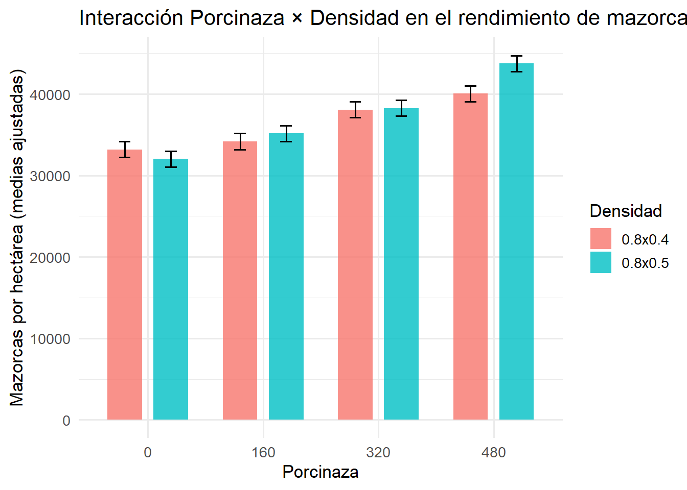
ggplot(fb, aes(x = porcinaza, y = mazorca_ha, fill = densidad)) +
geom_boxplot(alpha = 0.8, position = position_dodge(0.8)) +
labs(
title = "Rendimiento de mazorca por hectárea según Porcinaza y Densidad",
x = "Porcinaza",
y = "Mazorcas por hectárea"
) +
theme_minimal(base_size = 13)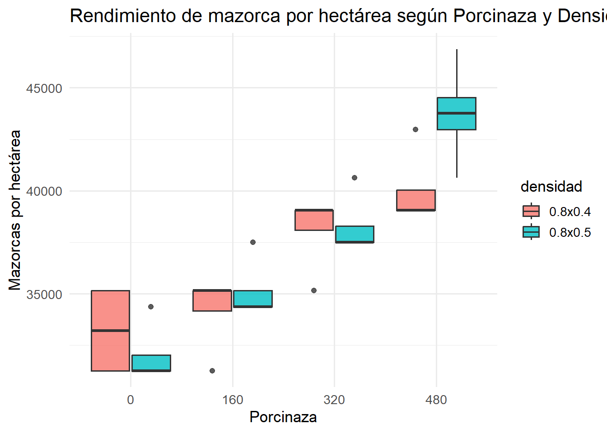
# Normalidad
qqnorm(resid(md_mazorca))
qqline(resid(md_mazorca), col = "red", lwd = 2)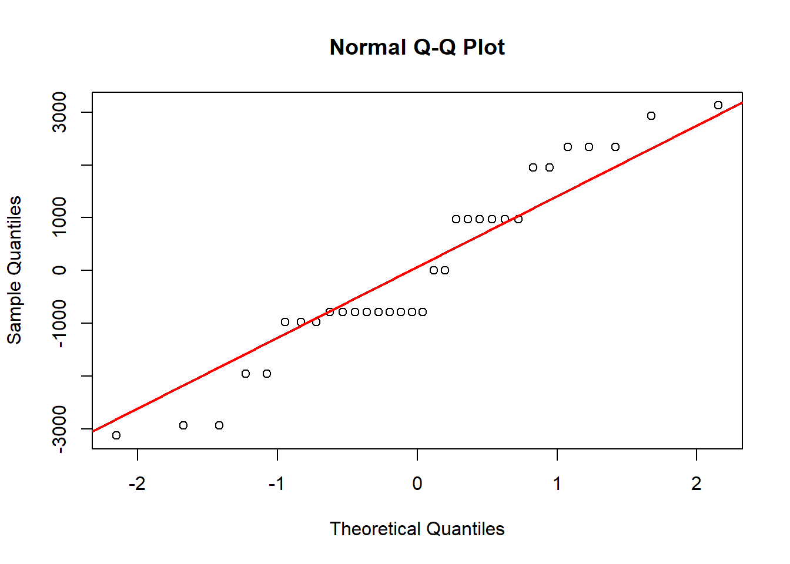